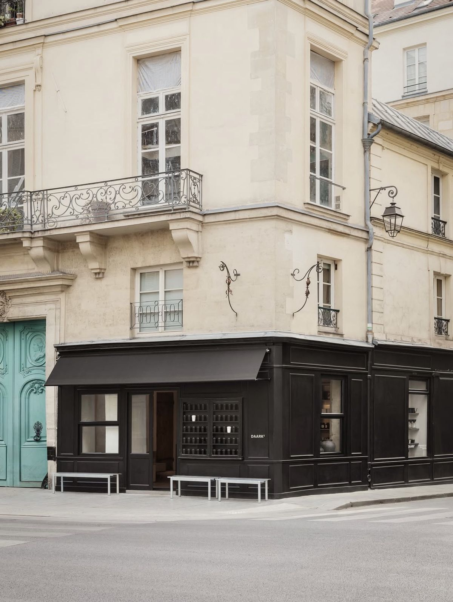
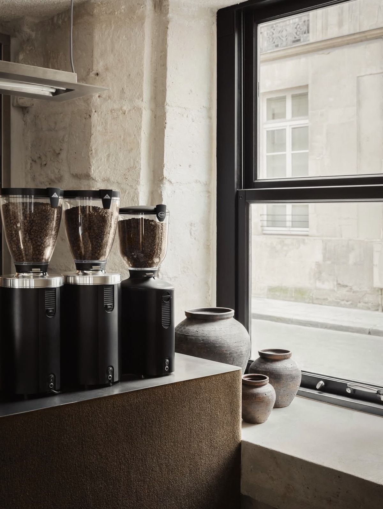
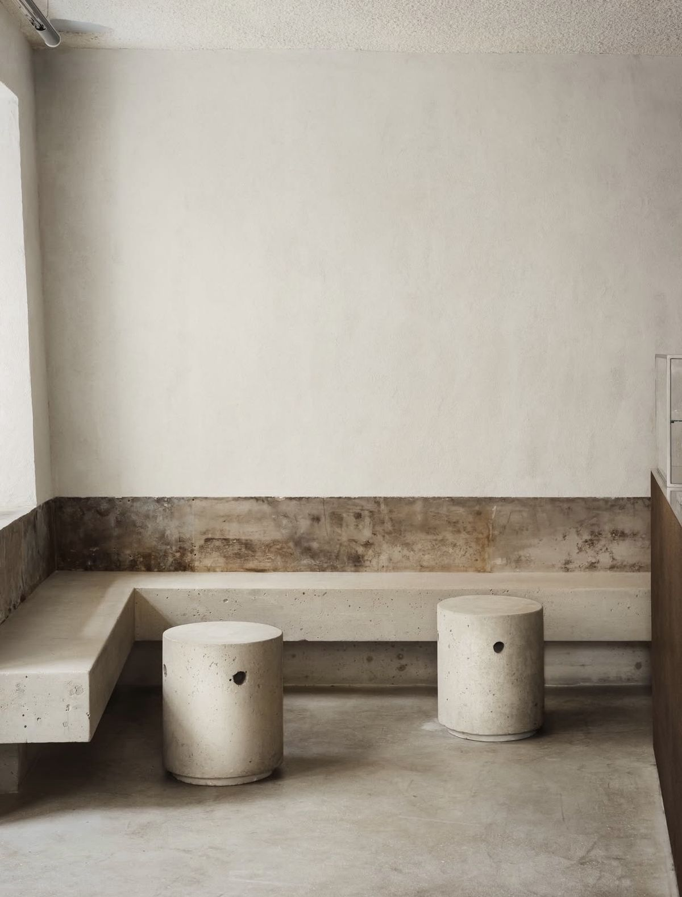
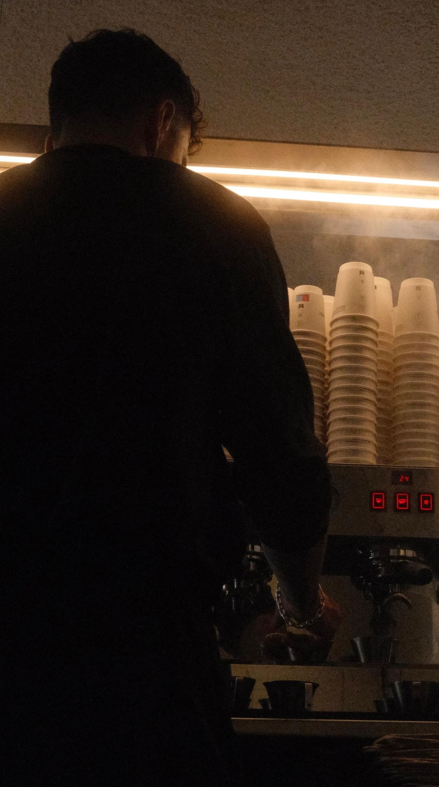
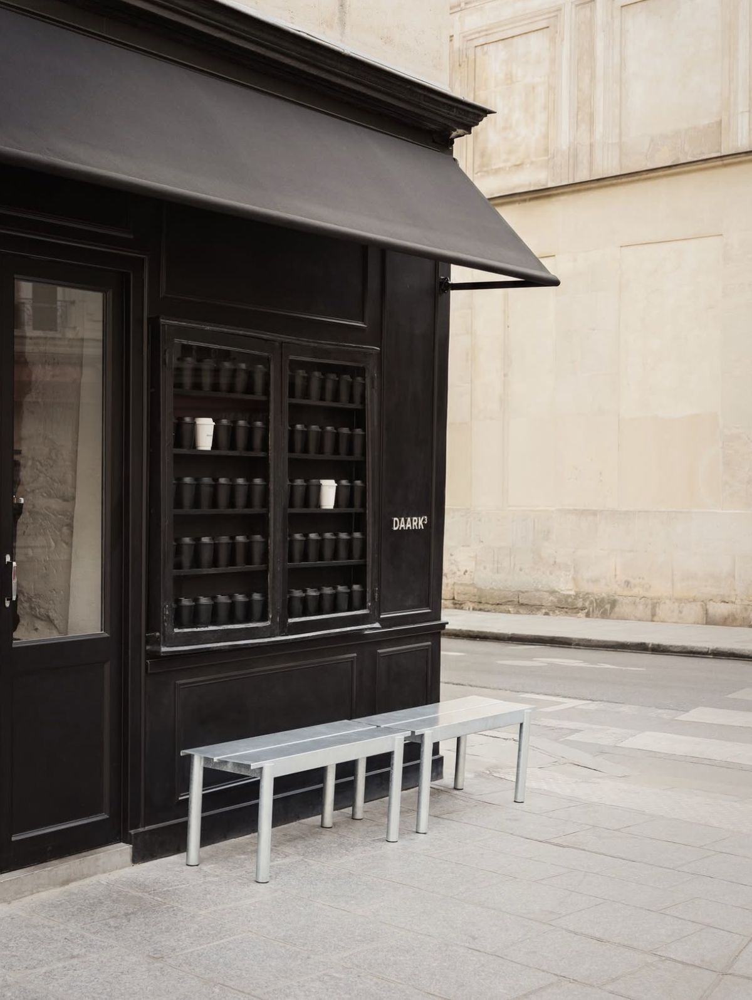

ClassicRoaster: Tanat
Todosantarita – GUA
- Origin:
- Guatemala
- Process:
- Washed
- Notes:
- Dark chocolate, Apple
Specialty coffee from selected roasters, on a corner of the Marais.

The Place1
Raw limestone walls, cast concrete seating and a stainless bar. A small room built around the coffee, open to the street.



Materials
Coffee2
Fall 2026
Espresso, batch brew
and cold brew
Visit3
For today’s opening hours, see @daark.paris on Instagram.
